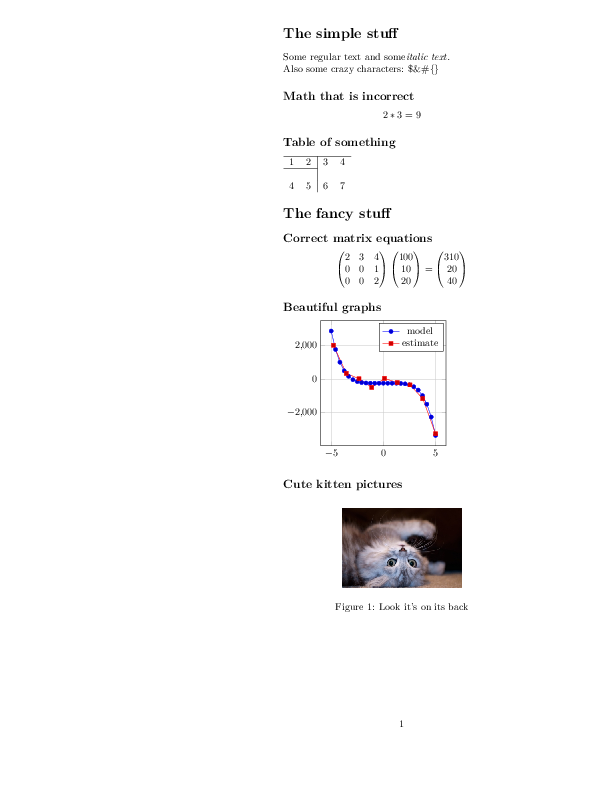

Full example¶
This example demonstrates several features of PyLaTeX.
It includes plain equations, tables, equations using numpy objects, tikz plots, and figures.
The code¶
import numpy as np
from pylatex import Document, Section, Subsection, Tabular, Math, TikZ, Axis, \
Plot, Figure, Matrix, Alignat
from pylatex.utils import italic
import os
if __name__ == '__main__':
image_filename = os.path.join(os.path.dirname(__file__), 'kitten.jpg')
geometry_options = {"tmargin": "1cm", "lmargin": "10cm"}
doc = Document(geometry_options=geometry_options)
with doc.create(Section('The simple stuff')):
doc.append('Some regular text and some')
doc.append(italic('italic text. '))
doc.append('\nAlso some crazy characters: $&#{}')
with doc.create(Subsection('Math that is incorrect')):
doc.append(Math(data=['2*3', '=', 9]))
with doc.create(Subsection('Table of something')):
with doc.create(Tabular('rc|cl')) as table:
table.add_hline()
table.add_row((1, 2, 3, 4))
table.add_hline(1, 2)
table.add_empty_row()
table.add_row((4, 5, 6, 7))
a = np.array([[100, 10, 20]]).T
M = np.matrix([[2, 3, 4],
[0, 0, 1],
[0, 0, 2]])
with doc.create(Section('The fancy stuff')):
with doc.create(Subsection('Correct matrix equations')):
doc.append(Math(data=[Matrix(M), Matrix(a), '=', Matrix(M * a)]))
with doc.create(Subsection('Alignat math environment')):
with doc.create(Alignat(numbering=False, escape=False)) as agn:
agn.append(r'\frac{a}{b} &= 0 \\')
agn.extend([Matrix(M), Matrix(a), '&=', Matrix(M * a)])
with doc.create(Subsection('Beautiful graphs')):
with doc.create(TikZ()):
plot_options = 'height=4cm, width=6cm, grid=major'
with doc.create(Axis(options=plot_options)) as plot:
plot.append(Plot(name='model', func='-x^5 - 242'))
coordinates = [
(-4.77778, 2027.60977),
(-3.55556, 347.84069),
(-2.33333, 22.58953),
(-1.11111, -493.50066),
(0.11111, 46.66082),
(1.33333, -205.56286),
(2.55556, -341.40638),
(3.77778, -1169.24780),
(5.00000, -3269.56775),
]
plot.append(Plot(name='estimate', coordinates=coordinates))
with doc.create(Subsection('Cute kitten pictures')):
with doc.create(Figure(position='h!')) as kitten_pic:
kitten_pic.add_image(image_filename, width='120px')
kitten_pic.add_caption('Look it\'s on its back')
doc.generate_pdf('full', clean_tex=False)
The generated files¶
full.tex¶
1 2 3 4 5 6 7 8 9 10 11 12 13 14 15 16 17 18 19 20 21 22 23 24 25 26 27 28 29 30 31 32 33 34 35 36 37 38 39 40 41 42 43 44 45 46 47 48 49 50 51 52 53 54 55 56 57 58 59 60 61 62 63 64 65 66 67 68 69 70 71 72 73 74 75 76 77 78 79 80 81 82 83 84 85 86 87 88 89 90 91 92 93 94 95 96 97 98 99 100 101 102 103 104 105 106 107 108 109 110 111 112 113 114 115 116 117 118 119 120 121 122 123 | \documentclass{article}%
\usepackage[T1]{fontenc}%
\usepackage[utf8]{inputenc}%
\usepackage{lmodern}%
\usepackage{textcomp}%
\usepackage{lastpage}%
\usepackage[tmargin=1cm,lmargin=10cm]{geometry}%
\usepackage{amsmath}%
\usepackage{tikz}%
\usepackage{pgfplots}%
\pgfplotsset{compat=newest}%
\usepackage{graphicx}%
%
%
%
\begin{document}%
\normalsize%
\section{The simple stuff}%
\label{sec:Thesimplestuff}%
Some regular text and some%
\textit{italic text. }%
\newline%
Also some crazy characters: \$\&\#\{\}%
\subsection{Math that is incorrect}%
\label{subsec:Maththatisincorrect}%
\[%
2*3 = 9%
\]
%
\subsection{Table of something}%
\label{subsec:Tableofsomething}%
\begin{tabular}{rc|cl}%
\hline%
1&2&3&4\\%
\cline{1%
-%
2}%
&&&\\%
4&5&6&7\\%
\end{tabular}
%
\section{The fancy stuff}%
\label{sec:Thefancystuff}%
\subsection{Correct matrix equations}%
\label{subsec:Correctmatrixequations}%
\[%
\begin{pmatrix}%
2&3&4\\%
0&0&1\\%
0&0&2%
\end{pmatrix} \begin{pmatrix}%
100\\%
10\\%
20%
\end{pmatrix} = \begin{pmatrix}%
310\\%
20\\%
40%
\end{pmatrix}%
\]
%
\subsection{Alignat math environment}%
\label{subsec:Alignatmathenvironment}%
\begin{alignat*}{2}%
\frac{a}{b} &= 0 \\%
\begin{pmatrix}%
2&3&4\\%
0&0&1\\%
0&0&2%
\end{pmatrix}%
\begin{pmatrix}%
100\\%
10\\%
20%
\end{pmatrix}%
&=%
\begin{pmatrix}%
310\\%
20\\%
40%
\end{pmatrix}%
\end{alignat*}
%
\subsection{Beautiful graphs}%
\label{subsec:Beautifulgraphs}%
\begin{tikzpicture}%
\begin{axis}[height=4cm, width=6cm, grid=major]%
\addplot{-x^5 - 242};%
%
\addlegendentry{model}%
\addplot coordinates {%
(-4.77778,2027.60977)%
(-3.55556,347.84069)%
(-2.33333,22.58953)%
(-1.11111,-493.50066)%
(0.11111,46.66082)%
(1.33333,-205.56286)%
(2.55556,-341.40638)%
(3.77778,-1169.2478)%
(5.0,-3269.56775)%
};%
%
\addlegendentry{estimate}%
\end{axis}%
\end{tikzpicture}
%
\subsection{Cute kitten pictures}%
\label{subsec:Cutekittenpictures}%
\begin{figure}[h!]%
\centering%
\includegraphics[width=120px]{../../../../examples/kitten.jpg}%
\caption{Look it's on its back}%
\end{figure}
%
\end{document}
|
full.pdf
